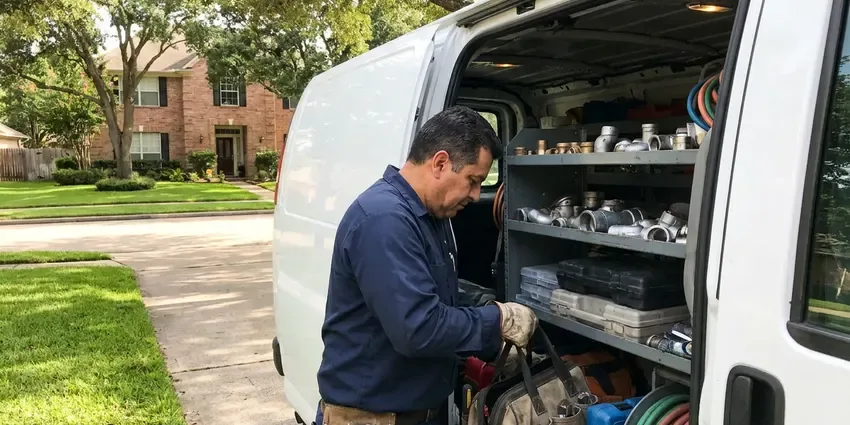

Tankless Water Heater Maintenance in Springfield, OR
Don't let mineral buildup reduce efficiency. JFL Plumbing offers professional tankless water heater maintenance across Springfield, OR.
- Upfront Pricing
- Navien, Rinnai and Noritz Trained
- Satisfaction Guarantee
- Isolation Valve Installs
Expert Tankless Water Heater Service in Springfield, OR.
Call today for an honest price on full tankless maintenance.
Your Local Choice for Tankless Water Heater Maintenance in Springfield, OR
JFL Plumbing knows tankless heaters run hot and narrow passages, which makes them sensitive to minerals. Without regular flushing, scale restricts flow and triggers shutdowns, so we build maintenance around the hardness of your water.
Our expertise includes:
- Ventilation Pathway Checks
- Ignition System Testing
- Descaling and Flushing

Additional Plumbing Maintenance Services in Springfield, OR
Our maintenance and specialty plumbing services in Springfield, OR catch small problems before they become emergencies.


Customers
Why Choose JFL Plumbing for Tankless Water Heater Maintenance in Springfield, OR?
Regular maintenance is essential for tankless water heaters to maintain their efficiency and avoid costly repairs. Without it, sediment and scale can accumulate, reducing performance and potentially damaging internal components.
- Extended Lifespan, Regular flushing and descaling prevent corrosion and wear, greatly extending your unit's working life.
- Safety Assurance, We inspect gas lines, exhaust vents and safety devices to confirm your unit operates without hazards.
- Clear Records, We log each service so you have proof of maintenance for warranty claims.
Citywide Coverage
From the heart of Springfield to its surrounding communities, JFL Plumbing offers complete coverage for all your tankless water heater maintenance needs. We are dedicated to delivering reliable service right to your doorstep, keeping your home comfortable.
Experienced Team
Our plumbers have descaled hundreds of tankless units and understand each brand's service menu and diagnostic codes. They know where Navien places its inlet filter and how Rinnai recirculation models need to be flushed.
Safety-First Approach
Safety is paramount in all our tankless water heater maintenance services. Our technicians follow strict safety protocols and adhere to all local Springfield, OR plumbing and gas codes during every inspection and service. We confirm proper ventilation and connections.
Trusted Certified Springfield Plumbing Services Professionals
At JFL Plumbing, we take pride in providing certified plumbing services throughout Springfield, OR. Backed by leading industry credentials, our experienced plumbers combine technical skill with genuine customer care. Whether it is repair, installation, or maintenance, we follow strict safety and quality standards to deliver lasting results you can trust.
Call Us Now PHCC Plumbing Contractor Recognition
PHCC Plumbing Contractor Recognition Better Business Bureau (BBB) Accreditation
Better Business Bureau (BBB) Accreditation Angi Certified Pro
Angi Certified Pro ISO 9001 Quality Management Certification
ISO 9001 Quality Management CertificationProfessional Tankless Water Heater Maintenance Services in Springfield, OR
Error Code Diagnostics in Springfield, OR
Codes like Rinnai LC, Navien E003 or Noritz 90 tell us a lot about what is going wrong. We read the code history, test flame rods, flow sensors and igniters and check gas pressure at the inlet. Many codes trace back to scale or a dirty filter and clear after maintenance. When a part has failed we explain the repair and the cost before doing any work.

Heat Exchanger Descaling in Springfield
The heat exchanger in a tankless heater is a coil of small tubes that water races through while the burner fires. Hard water drops calcium and magnesium on those hot surfaces, narrowing the passages over time. We connect a submersible pump and hoses to the service valves and circulate descaling solution for 45 to 60 minutes. Then we flush with fresh water to rinse the system thoroughly. Restored flow means steadier temperatures and fewer shutdowns.
Inlet Filter and Air Intake Cleaning in Springfield
Every tankless unit has an inlet water screen that catches grit and scale flakes. Those screens can clog with sand and debris, especially after municipal line work. We pull and clean the screen and inspect the air intake filter, which can load up with dust and dryer lint. Clean filters keep the flow sensor reading correctly and the burner breathing properly.
Tankless Water Heater Venting System Check in Springfield
Proper ventilation is critical for the safe operation of gas-fired tankless water heaters. Our maintenance service in Springfield includes a thorough inspection of the venting system for blockages, proper slope and secure connections. We confirm that exhaust gases are safely directed outside and that no carbon monoxide leaks are present, which is vital for the health and safety of your household.
Maintenance Cost Versus Repair Cost in Springfield, OR
A tankless descaling visit typically costs far less than replacing a scaled heat exchanger, which can run $600 to $1,500 or more in parts and labor. Some manufacturers deny exchanger claims when scale damage is found. Regular maintenance helps protect a unit that can last 20 years when cared for. We help you decide whether a softener or scale inhibitor would reduce your long-term costs too.
Preventative Maintenance for All Tankless Brands in Springfield, OR
JFL Plumbing provides preventative maintenance for all major tankless water heater brands, including Navien, Bosch and State, across Springfield, OR. Our technicians are cross-trained to handle the unique requirements of each manufacturer. We perform descaling, filter cleaning and component checks tailored to your specific model, supporting long-term reliability and manufacturer warranty requirements, regardless of the brand.
Commercial Tankless System Maintenance in Springfield, OR
Businesses in Springfield, OR rely on consistent hot water for their operations, making regular tankless water heater maintenance essential. We service commercial-grade tankless units, performing thorough inspections of all components, checking for proper gas pressure and cleaning filters and vents. Our preventative approach minimizes downtime and gives your business reliable hot water for restrooms, kitchens or industrial processes.

Recirculation and Combi System Service in Springfield, OR
Many tankless units now include built-in recirculation pumps or buffer tanks to deliver faster hot water. These systems move more water through the exchanger and scale up sooner. We flush the recirculation loop, check pump operation and verify crossover or dedicated return line settings. Correct schedules can cut wasted energy while still giving you quick hot water.
Local Tankless Water Heater Maintenance Near Me in Springfield, OR
JFL Plumbing is committed to serving our local community in Springfield, OR with top-tier plumbing services. Our proximity allows us to offer timely maintenance for your tankless water heater, so you receive prompt, professional care whenever you need it most. We are always just a call away.
When your tankless unit needs a professional touch, you want a trusted service provider nearby. JFL Plumbing is your local choice for tankless water heater maintenance in Springfield, OR, offering prompt, efficient service with a focus on customer satisfaction. Don't search endlessly, call us for fast assistance.
JFL Plumbing at a Glance
- Licensed and insured plumbers serving Springfield, OR
- Same-day appointments and 24/7 emergency response
- Clear written estimates, no hidden fees
- 4.8-star rated by 657+ Oregon customers
Springfield Map
Springfield Information
- Population
- 61,085
- Area codes
- 541/458/447
- Service area
- Springfield and communities within 40 miles
- Nearby
- Eugene, Corvallis, Albany, Salem
Regular tankless water heater maintenance is especially important for homes in Springfield, OR, where minerals in the water can quickly lead to scale buildup and reduced efficiency.
Expert Services
Trust our professionals for reliable JFL Plumbing solutions in Springfield, OR.
Our Specialized Plumbing Services in Springfield, OR
At JFL Plumbing, we provide a complete range of plumbing services across Springfield, OR. From leak detection to full system installations, our team ensures fast, precise, and affordable service for both residential and commercial properties. Explore our core services below:


How Our Tankless Water Heater Maintenance Process Works in Springfield, OR
We follow a systematic approach so every part of your tankless water heater is inspected and maintained effectively.
Request a Quote
Contact us at (971) 333-7694 or through our website to schedule your tankless water heater maintenance. Our helpful staff will gather the needed details and provide a transparent quote.
On-Site Inspection
A certified technician arrives at your Springfield home to perform a thorough inspection of your tankless unit, checking for any visible issues, leaks or error codes.
Descaling & Flushing
We perform a crucial descaling and flushing of the heat exchanger to remove mineral buildup, a common problem with hard water, restoring efficiency.
Frequently Asked Questions About Tankless Water Heater Maintenance in Springfield
Most tankless descaling visits cost $175 to $350, depending on brand and access. Adding an isolation valve kit usually runs $150 to $300 more.
A cold water sandwich can come from restricted flow, a dirty inlet filter or a flow sensor not reading correctly. Descaling and filter cleaning usually improve it.
A softener or scale prevention system sharply reduces buildup in the heat exchanger. Some brands even recommend treatment when hardness is high. Water in western Oregon is generally soft, while the drier eastern side tends to have harder, more mineral-heavy groundwater.
Most visits take one to two hours, including the descaling cycle. Installing isolation valves on the same trip adds about an hour.
Yes, regular maintenance is crucial for maintaining your tankless water heater's energy efficiency. Descaling removes mineral deposits that force the unit to work harder, using more energy to heat water. Clean components and proper calibration help your unit operates at its designed efficiency, saving you money on energy bills.
Most tankless water heater manufacturers recommend annual maintenance to ensure good performance and extend the unit's lifespan. In areas with harder water, more frequent checks, perhaps every 6 to 9 months, might help to prevent excessive scale buildup.
A standard tankless water heater maintenance service, including flushing and inspection, usually takes 1 to 2 hours. The exact time can vary depending on the unit's condition, the amount of scale buildup and any unexpected issues encountered during the service.
If you have isolation valves, a pump and the right solution, a handy homeowner can do it. A pro visit also checks gas pressure, venting, sensors and condensate, which a DIY flush leaves out.
What People Are Saying About Our Plumbing Experts?

Laura S.
I scheduled a water heater replacement, and the team made the process smooth and affordable. The new unit works perfectly, and they cleaned up after completing the job.
Water Heater Replacement · Corvallis, OR
Daniel K.
A pipe burst at 11 pm and they actually answered. The plumber showed up within the hour, shut everything down, and had us back to normal the next morning. Could not ask for more.
Emergency Plumbing · Keizer, OR
Mark T.
When our office needed drain cleaning, JFL Plumbing provided quick, reliable service. The plumber arrived on time and made sure every drain flowed perfectly before leaving. Very satisfied.
Drain Cleaning · Corvallis, ORSofia M.
Two new toilets installed in one visit, no mess left behind, and the tech even adjusted a faucet he noticed was dripping. Fair pricing and really friendly.
Toilet Installation · Corvallis, OR
Patricia H.
We had a slab leak that two other companies could not find. JFL Plumbing located it in under an hour, explained our options, and the price matched the quote to the dollar.
Slab Leak Repair · Albany, OR
James P.
Our commercial plumbing system had a leak under the sink, and JFL Plumbing handled it professionally. The plumbers arrived quickly and restored everything without disruption to our customers.
Commercial Plumbing · Albany, OR